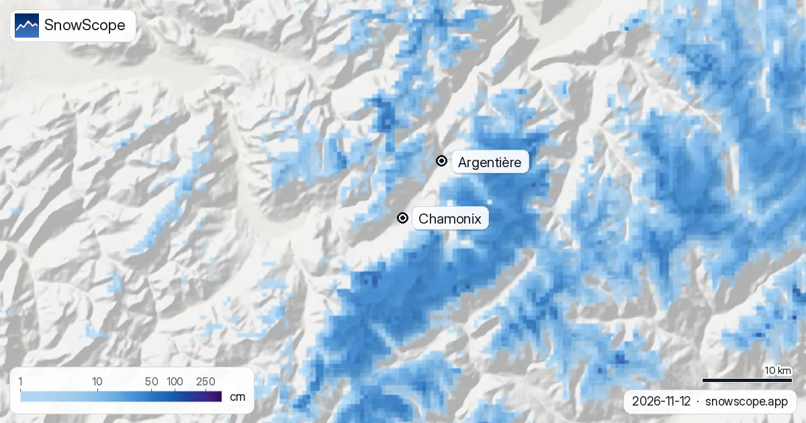

Espesor de nieve en Chamonix: valle sin nieve, 12 cm en el Brévent, de 5 a 24 cm arriba en Les Grands Montets (13 de noviembre de 2026)
A mediados de noviembre, el espesor de nieve en Chamonix depende casi solo de una cosa: a qué altura se está. En el fondo del valle el suelo está desnudo. Nuestras cifras encuentran la primera nieve que se queda más o menos a la altura de la estación intermedia de Les Grands Montets, 1 cm a 2001 m, luego 12 cm arriba en Brévent-Flégère (2486 m) y algo entre 5 y 24 cm arriba de los remontes de Les Grands Montets (2768 m). Para la semana que viene se espera una gran tormenta, pero en el valle empieza como lluvia.
Consulta la previsión de nieve en tiempo real de Chamonix en la app SnowScopeEspesor de nieve, alertas de nieve polvo y mapa 3D, gratis.
La escalera de alturas, del río a los remontes más altos
Aquí está el valle leído de abajo arriba, con los tres dominios que seguimos alrededor de Chamonix. A 978 m, al pie de Les Houches: nada. A 1047 m, el fondo del valle bajo el Brévent: nada. A 1234 m, la base de Les Grands Montets en Argentière: nada. A 1432 m y 1887 m en Les Houches sigue sin haber nada en el suelo, aunque arriba cayeron 6 cm esta semana. A 1766 m en el lado de la Flégère: nada.
La línea solo se cruza por encima. A 2001 m en Les Grands Montets hay 1 cm, después de 8 cm caídos en la semana. A 2486 m, arriba de Brévent-Flégère, hay 12 cm, tras 8 cm en el último día y 18 cm en siete días. A 2768 m, arriba de Les Grands Montets, la capa existe pero su espesor exacto es incierto, y merece un párrafo propio.
La respuesta honesta en una línea a «cuánta nieve hay en Chamonix» hoy: nada en el pueblo, un comienzo fino a partir de 2001 m, la estación intermedia de Les Grands Montets, y lo mejor en las laderas norte de Les Grands Montets.

Por qué la cima de Les Grands Montets es una horquilla
Nuestra propia estimación a 2768 m es de 24 cm, hecha con 15 cm de nieve en el último día y 35 cm en la semana. La estación de nieve de altura más cercana, en el Val Ferret suizo a unos 10 km y a 2800 m, dio por última vez 5 cm, el 2 de noviembre, antes de la mayor parte de la nieve de esta semana. Nuestra página de la estación se apoya en esos 5 cm medidos; el suelo hoy está muy probablemente entre ambos.
El viento añade duda. La parte alta de Les Grands Montets son crestas abiertas y circos glaciares, y la nieve temprana se va de las crestas y se compacta en las hondonadas. Un esquiador puede encontrar ventisqueros hasta la rodilla y roca desnuda en pocos giros. Lea de 5 a 24 cm como una horquilla justa para la cima, no como una promesa para una ladera concreta.
Por encima de los remontes: lo que ningún mapa puede decir
El teleférico de la Aiguille du Midi sube de 1035 m en Chamonix a 3842 m, muy por encima del punto más alto para el que damos un espesor. Allí arriba la nieve descansa sobre glaciares que guardan una capa todo el año, y el espesor que cuenta para la Vallée Blanche es el de los puentes de nieve sobre las grietas, no una cifra en un gráfico. No publicamos un espesor para ese terreno, y no conviene fiarse de quien da uno a partir de un mapa. La oficina de guías y el boletín de aludes son las únicas fuentes que usar.
La semana que viene: mucha nieve arriba, lluvia abajo
En siete días tenemos unos 100 cm arriba en Les Grands Montets, 63 cm a 2001 m y 8 cm a 1234 m. Al otro lado del valle, Brévent-Flégère recibe 80 cm arriba y 47 cm a 1766 m; Les Houches 64 cm a 1887 m y 26 cm a 1432 m.
Antes de publicar comparamos estas cifras con otros pronósticos. Arriba en Les Grands Montets se dispersan mucho, de 89 a 211 cm, así que nuestra cifra está en el medio. La cota de nieve de esos pronósticos está entre unos 1500 y 1800 m. En el valle, de 1047 a 1234 m, casi toda el agua cae como lluvia; a 1432 m en Les Houches la lluvia sigue siendo la mayor parte, y a 1766 m en el lado de la Flégère cerca de la mitad. Dicho llano: lluvia en Chamonix, lluvia y nieve mezcladas a media altura, nieve solo a partir de unos 1800 m. Al final de la semana la escalera debería empezar mucho más abajo que hoy, pero el fondo del valle probablemente seguirá verde o enfangado.
Cuánta nieve suele tener Chamonix
Nuestros 46 inviernos pasados (1980-81 a 2025-26) muestran un valle de extremos. En el fondo del valle bajo el Brévent (1047 m) un invierno medio llega solo a 85 cm, con 58 cm en el invierno más pobre y 131 cm en el más rico; un noviembre habitual tiene allí 5 cm y diciembre 30 cm. Arriba en Les Grands Montets el pico medio es de 427 cm, entre 294 y 638 cm, y los meses más gruesos son marzo y abril (352 y 355 cm). Pocos lugares de los Alpes tienen tanta diferencia de espesor en tan poca carretera.
Mediados de noviembre suele ser flaco también aquí: un noviembre habitual tiene 21 cm a 2001 m y 58 cm arriba en Les Grands Montets, aunque uno de cada diez noviembres tiene 130 cm arriba. Diciembre sube luego a 65 cm a 2001 m y 155 cm arriba, enero a 114 y 245 cm.
La tendencia es clara a todas las alturas. En el fondo del valle el pico medio bajó de 98 cm en los primeros 15 inviernos de nuestra serie a 82 cm en los últimos 15, y los días con nieve de 197 a 172. Arriba en Les Grands Montets, de 490 a 419 cm. El invierno pasado fue bueno en altura: 466 cm arriba en Les Grands Montets, 357 cm arriba en el Brévent, 88 cm en el fondo del valle.
Leer el espesor de nieve de Chamonix para un viaje
Si piensa bajar esquiando hasta el valle, mire la cifra de abajo, no la de arriba: en el fondo del valle solo 3 semanas del invierno tienen 50 cm o más en 9 de cada 10 inviernos. Si se queda arriba, la cima de Les Grands Montets tiene 26 semanas así, y su mejor semana en nuestra serie, la decimocuarta del año (principios de abril), tiene un espesor medio de 381 cm. Para la mayoría de visitantes el punto justo está entre ambas: la parte media de los dominios, que suele tener una capa sólida desde el cambio de año.
Consejos para esquiadores
- Mire el espesor a la altura donde va a esquiar: en Chamonix el valle y la cima pueden diferir en más de un metro la misma semana.
- Esta semana, cuente con lluvia en el pueblo y en las carreteras del valle y con nieve solo a partir de unos 1800 m; lleve cadenas para subir a los aparcamientos más altos.
- El terreno glaciar por encima de los remontes exige un guía, y la nieve nueva sobre una base fina es una trampa de aludes: lea el boletín de Météo-France antes de cualquier fuera de pista.
Más mapas (sitios externos)
Referencias y créditos
- Chamonix-Mont-Blanc, web oficial (remontes, fechas de apertura, parte de nieve) www.chamonix.com/
- Wikipedia, Aiguille du Midi (alturas del teleférico), consultada el 13/11/2026 en.wikipedia.org/wiki/Aiguille_du_Midi
- Météo-France, tiempo de montaña y boletines de aludes meteofrance.com/meteo-montagne
Sobre estas cifras
Espesor y nevadas: el modelo de nieve de SnowScope, pasada del 12 de noviembre de 2026 actualizada el 13 de noviembre, a tres alturas de los dominios de Les Grands Montets, Brévent-Flégère y Les Houches (una estimación para la zona, no mediciones de la estación); arriba en Les Grands Montets nuestra página de la estación usa la estación IMIS del SLF Glacier de l'Evole (Val Ferret, 2800 m, lectura del 2 de noviembre). Horquilla de la semana y cota de nieve: los pronósticos independientes que comparamos antes de publicar (ECMWF, ICON, GFS, GEM). Histórico: 46 inviernos pasados (1980-81 a 2025-26), un modelo del pasado corregido por altitud. Alturas de la Aiguille du Midi: Wikipedia, consultada el 13/11/2026. Los pronósticos cambian: mire el mapa antes de ir.
Boletines oficiales de aludes: Météo-France – Bulletin d'estimation du risque d'avalanche
Citar este informe
Para investigación, docencia o prensa: cifras y gráficos reutilizables libremente bajo CC BY 4.0 con esta cita.
SnowScope (2026), Espesor de nieve en Chamonix: valle sin nieve, 12 cm en el Brévent, de 5 a 24 cm arriba en Les Grands Montets (13 de noviembre de 2026), https://snowscope.app/blog/es/2026/11/chamonix-snow-depth-13-november-2026.html, consultado el 2026-11-13
SnowScope (Atlas Labs). (2026, November 13). Espesor de nieve en Chamonix: valle sin nieve, 12 cm en el Brévent, de 5 a 24 cm arriba en Les Grands Montets (13 de noviembre de 2026). SnowScope snow reports. https://snowscope.app/blog/es/2026/11/chamonix-snow-depth-13-november-2026.html
BibTeX
@misc{snowscope2026chamonixsnowdepth13novem,
author = {{SnowScope (Atlas Labs)}},
title = {Espesor de nieve en Chamonix: valle sin nieve, 12 cm en el Brévent, de 5 a 24 cm arriba en Les Grands Montets (13 de noviembre de 2026)},
year = {2026},
month = nov,
howpublished = {\url{https://snowscope.app/blog/es/2026/11/chamonix-snow-depth-13-november-2026.html}},
note = {Published 2026-11-13 13:00 UTC; accessed 2026-11-13}
}· CC BY 4.0 · Métodos, datos y herramientas →
Chamonix: nieve y temperatura según la altura, este invierno vs el pasado (herramientas) →
Sigue Chamonix
Gratis: un aviso cuando llega la nieve y la previsión cada mañana.
Más partes de nieve

En 24 de 46 inviernos, las estaciones de la vertiente italiana y del sur de los Alpes franceses tuvieron un invierno relativamente mejor que la vertiente norte. El gráfico, los grandes años y el tiempo que hubo detrás.

¿Se llenará el manto de nieve de los Écrins a los Alpes Marítimos y el Piamonte como de costumbre en diciembre de 2026? La previsión estacional europea y nuestro mapa, montaña a montaña.